職業健康安全風險評估（OHSRA）總論與相關研究導讀分享
講師簡介
姓名：何明信
學歷：成大環醫所 、職安衛技師
經歷：檢查員30年 (製造、危機設、營造、化工職衛科、專委)
現職：114年退休
E-mail：msho7336959@gmail.com
先腦力激盪一下… (功力傳承)
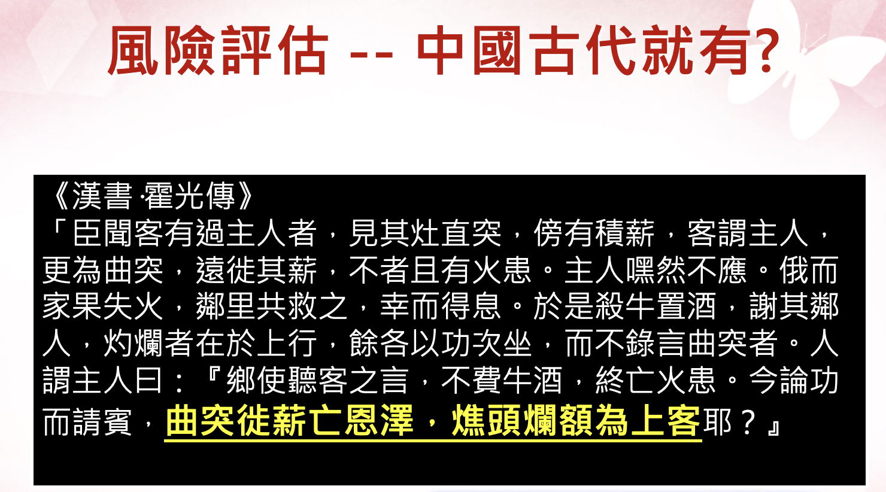
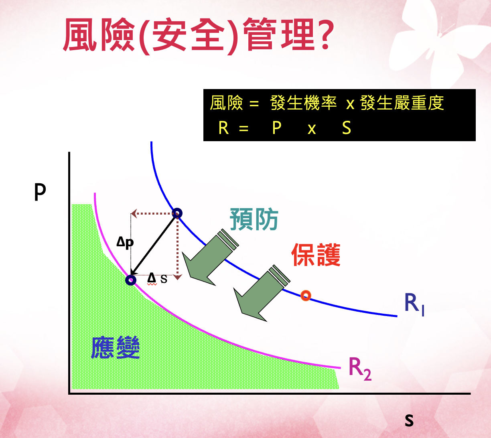
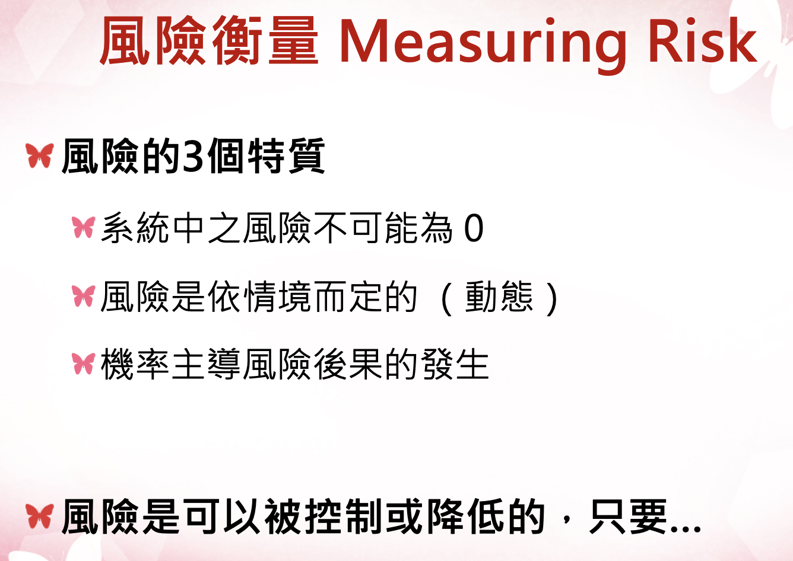
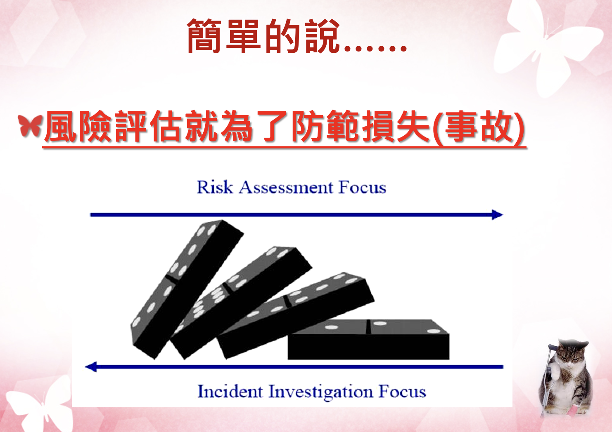
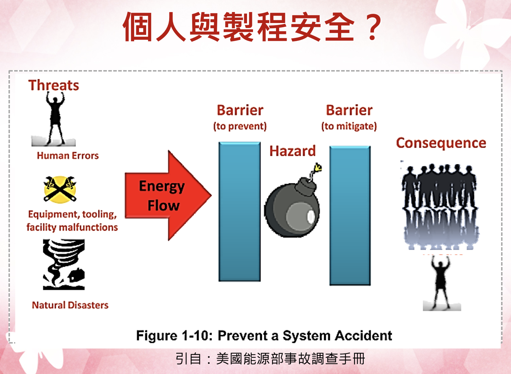
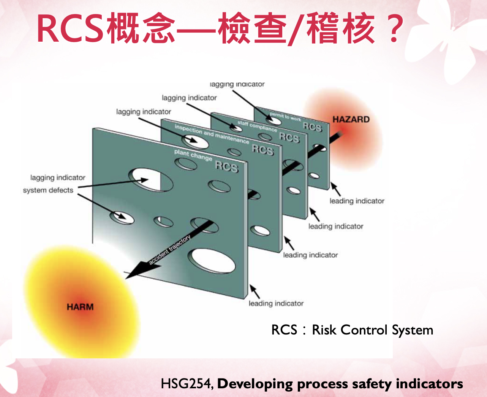
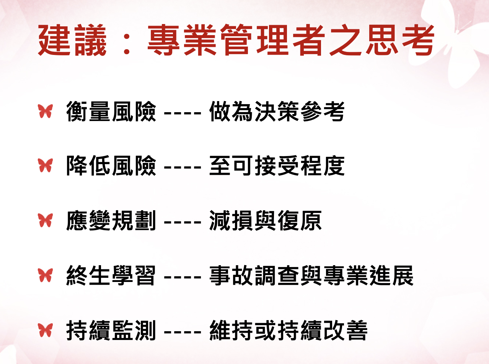
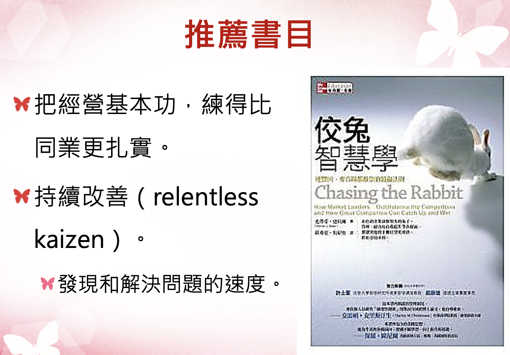
高速、高營運績效組織的成功，並非取決於聚集了所有具備某種特殊才能的員工。
以員工人數動輒成千上百，甚至上萬名的情況看來，這根本毫無可能。
這些組織締造高速的關鍵在於，「人盡其才，悉用其力」，刻意且持續地讓中等人才得以發揮到極致。
反觀其對手，卻平白糟蹋人力，讓員工為應付系統雜音而疲於奔命，反覆承受著挫折和失敗。
1. 職場風險評估總論
安全與衛生領域的風險評估
這份教材專為職安衛主管設計，旨在深度解析**安全（Safety）與衛生（Hygiene）**兩大領域的風險評估精要。透過通用步驟與與健康（專業毒理學）的並陳，學員將建立起「預見危害、科學評估、有效控制」的全方位預防管理思維，從源頭阻斷職業傷害（意外）與職業病的發生。
第一部分：通用風險評估五步驟 (HSE 模式 - 安全導向)
通用風險評估主要聚焦於即時性、物理性的傷害。這些危害通常是直觀可見的，依循英國安全衛生執行署（HSE）的經典五步驟（融合我國相關指引），其核心在於透過專業的現場巡查與常識判斷來防止傷亡意外。
步驟 1：辨識顯著危害 (Look for the Hazards)
管理深度解析：管理者巡視現場時，應具備「預見性」視角。除了顯而易見的缺失，更要關注「潛在」的不安全狀態。例如：
物理能量可能釋放：如高壓蒸氣管線的腐蝕劣化、未固定的高壓鋼瓶、運轉中缺乏安全護罩的快速刀片等。
環境動態可能危害：濕滑地面不只是液體傾倒，也包含環境溼度凝結；堆放雜物不僅堵塞路口，更可能在地震時坍塌造成傷亡。
人機互動介面：堆高機在盲區的作業、員工因疲勞導致的誤操作情境等。
關鍵方法：採取「行動巡檢」，落實到位查證，及徵詢第一線老員工，詢問：「在哪個作業環節你覺得最不合理？」或「哪台機器曾發生過『差點傷到人』的情況？」。
步驟 2：確認可能受到傷害的對象與方式 (Decide Who Might be Harmed)
重點：不要僅列出姓名，而要分析群體暴露的脆弱性及其特定的受傷機制。
特殊族群考量：
青少年與新進勞工：由於缺乏職涯中的「危險記憶」，常會為了追求效率而簡化安全流程。
非固定雇員（承攬商/訪客）：他們不熟悉廠內特定的應變程序。例如，化學品洩漏報警聲響時，他們可能不知道該往哪裡撤離。
脆弱個體：包含患有特定慢性病（如心臟病勞工在高溫環境）、孕婦（需防範體力負荷過重）或單獨作業者（發生心肌梗塞或受傷時無人呼救）。
步驟 3：評估風險並決定控制措施 (Evaluate and Decide)
目標：（ALARP 原則） 判斷剩餘風險是否已降至「合理可行」的最低限度（As Low As Reasonably Practicable）。這涉及控制成本與風險降低效益之間的平衡。
控制層級（Hierarchy of Controls）應用：
消減 (Elimination)：從設計階段就移除風險，如自動化倉儲取代人工搬運。
取代 (Substitution)：改用較低危險性的作業方式或材料。
工程控制 (Engineering)：這是最應投入預算的環節，如設置連鎖防護、遠端遙控作業。
行政管理 (Administrative)：包括建立作業許可證制度（PTW）、限制高風險區域的進入人數、教育訓練、制定ＳＯＰ等。
個人防護裝備 (PPE)：嚴禁將 PPE 作為第一線或唯一手段。主管需指導與監督 PPE 的正確配戴與耗材更換頻率。
步驟 4：記錄重要發現 (Record Your Findings)
法律與責任：紀錄不僅是法規要求，更是發生爭議時的「免責與佐證」資料。
高品質紀錄的標準：
必須證明已進行過「適當且充分」的調查。
展示已處理所有顯著危害。
證明控制措施是與風險程度相稱的（Proportionate）。
步驟 5：審查與修訂 (Review and Revise)
- 觸發機制：評估不是終點。當引進新設備、製程變更、或發生「事故或虛驚事故（Near Miss）」時，代表既有危害與風險評估可能存在盲點，必須立即重啟評估流程。
第二部分：化學健康風險評估 (毒理學模式 - 衛生導向)
化學品風險評估需具備科學廣度。由於化學傷害具備長期性、隱蔽性與不可逆性，管理者必須仰賴毒理學數據而非僅靠肉眼觀察或感覺。
1. 危害辨識 (Hazard Identification)
資訊解讀能力：熟練查閱 SDS（安全資料表）第 2、11、15 節。辨識化學品是否具備「三致效應ＣＭＲ」（致癌、致突變、生殖毒性）。
環境特徵分析：分析化學品的飽和蒸氣壓、高揮發性物質在通風不良處會迅速達到有害濃度。
2. 危害特徵描述與 ADME 程序 (Hazard Characterization)
毒理動力學（Toxicokinetics）解析：

吸收 (Absorption)：吸入是職場最危險途徑，肺泡巨大的交換面積使毒素直接進入血流。注意皮膚滲透，某些溶劑會攜帶其他溶質「穿透」防護手套。
分布 (Distribution)：化學品會儲存於人體「儲存庫」。如鉛儲存於骨骼、脂溶性溶劑存於脂肪。這會導致動員作用 (Mobilization)，使員工在停止暴露後血液中仍持續出現毒素。
代謝 (Metabolism)：身體透過酵素將化學物質轉化，可能降低或增加毒性。
排泄 (Excretion)：腎臟功能影響排毒效率。半衰期長的化學品更易造成蓄積性中毒。

3. 暴露評估與監控邏輯 (Exposure Assessment)
定量標準：不僅看現場量測濃度（如 8 小時時量平均濃度 (TWA)、ＳＴＥＬ等），更要掌握長期暴露概況（exposure profile）。
生物監測 (Biomonitoring)：必要時透過尿液或血液檢查，確認「總吸收量」，這比單純的環境空氣採樣更能精準反映勞工的真實風險。
4. 風險特徵描述與長期效應 (Risk Characterization)
潛伏期與慢性疾病：（例）
慢性肺部損傷：如石棉引發的肺纖維化、長期粉塵導致的肺氣腫。
癌症風險：潛伏期常長達 20-40 年。這意味著今日的管理疏失，將在員工退休時以癌症形式顯現。
交互作用 (Interactions)：
協同效應 (Synergy)：如吸菸勞工暴露於石棉，其癌症風險不是相加而是相乘。
相加效應：多種溶劑同時使用，會累加中樞神經系統的抑制效果。
第三部分：安全 vs. 衛生風險評估比較
| 比較項目 | 通用風險評估 (安全 - Safety) | 化學品風險評估 (衛生 - Hygiene) |
|---|---|---|
| 傷害性質 | 急性、即時發生（如骨折、電擊、爆炸傷）。 | 慢性、累積、延遲發生（如癌症、神經萎縮）。 |
| 危害感知 | 危害清晰可見（如漏電、轉動軸、不穩的梯子）。 | 危害常不可見（如無味蒸氣、亞微米粉塵）。 |
| 判定準則 | 機械安全標準、法規淨空間距、承重係數。 | OEL（暴露限值）、TWA、ADME 分布模型。 |
| 可逆性 | 外科損傷通常可修復。 | 器官損傷常具不可逆性（如肺纖維化、細胞突變）。 |
| 監控手段 | 安全巡檢、設備自動檢測、自動斷電。 | 空氣採樣、生物檢材採樣（尿/血）、肺功能監控。 |
| 主要侵入路徑 | 物理性機械能、熱能、電能接觸。 | 吸入（最主）、皮膚滲透、體內化學代謝。 |
| 預防邏輯 | 阻斷接觸能量傳遞，隔離危險源。 | 降低累積暴露濃度、強化代謝排泄、縮短工時。 |
檢查員職涯經驗分享
營造工地職業衛生評估 （與現場職安人員協作）
產出：營造作業健康危害評估：何明信、游淳淼、謝聰敏、顏佐旻、李思玄，工業安全衛生月刊，2011年。
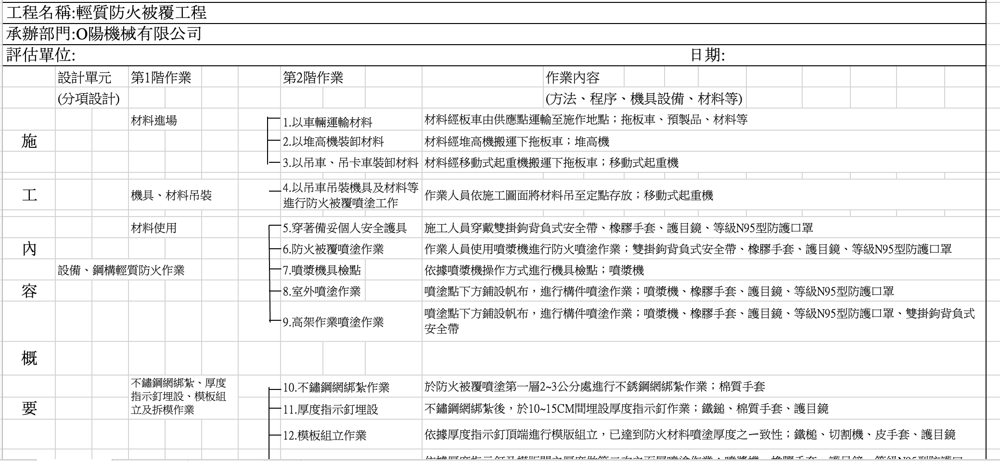
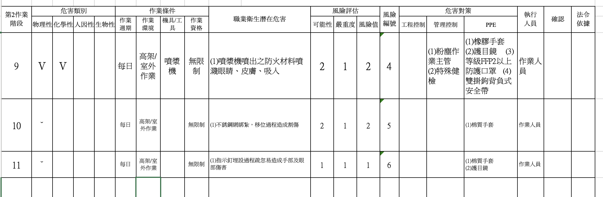
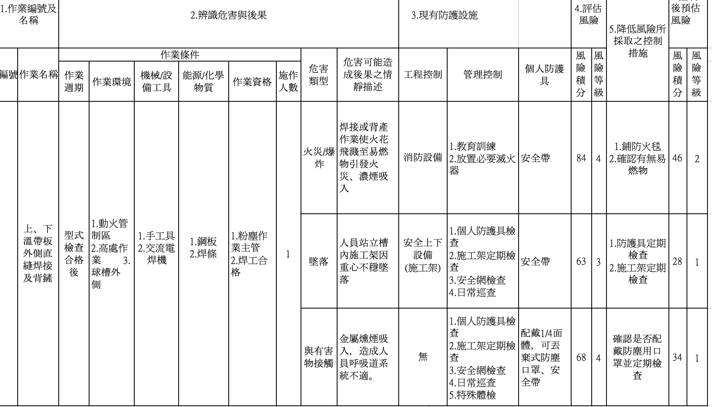
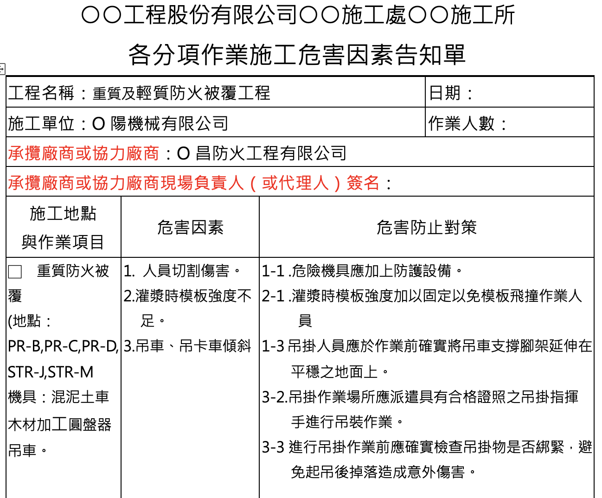
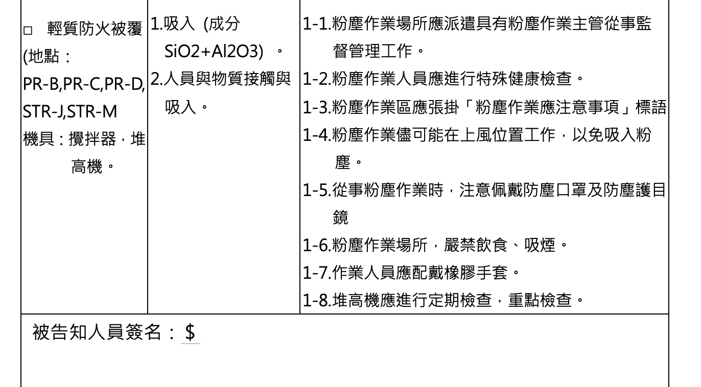
第四部分：職安衛專業人員的專業提升建議
為了具備卓越的職場風險評估與控制職能（Competence），專業人員可以從以下四個維度持續自我提升，從追求「合規者」轉型為「策略管理專家」：
1. 跨學科知識的深度與廣度
化學與毒理學深耕：不要只滿足於讀懂 SDS。應研究第 11 節的毒理數據（如 \(LD_{50}\)、\(LC_{50}\)、\(IDLH\)），理解化學品的傷害機制。
工程與流體力學：掌握局部排氣系統（LEV）的評估技術。能判斷捕捉風速是否真正將污染物帶離勞工呼吸帶，而非僅是「有抽風聲而已」。
倫理與法規：熟悉 ISO 45001 與最新勞動法令，同時維持「保護勞工生命與健康與企業發展平衡」的專業倫理。
2. 數據解讀與證據轉化能力 (Evidence-based Action)
批判性思考：學會質疑環境監測報告，採樣點是否設在「最糟情況」？採樣時間是否涵蓋了作業高峰期？統計推論暴露風險等。
流行病學應用：觀察員工體檢報告的「趨勢」，若特定單位員工肝指數集體異常，即使環境監測合格，也應懷疑是否存在皮膚吸收或非典型暴露路徑的可能性。
3. 高階風險溝通與影響力 (Strategic Communication)
向上溝通：學會將「安全與健康數據」轉化為「財務語言」，向高層解釋預防性控制能節省多少未來的停工、罰鍰、職災補償費用與商譽損失等。
向下溝通：將枯燥的法規標準、OEL 限值轉化為感性敘事，如強調「為了二十年後能健康地陪伴家人，在一定狀況下，請選用正確呼吸防護具等」。
4. 國際視野與資訊同步
追蹤權威機構資訊：定期訂閱 ＨＳＥ、ＯＳＨＡ、ＡＩＨＡ、勞安所、職安署等電子報或指南與研究報告等。
專業認證與社群：積極參與國內外專業證照考試（如 職安衛技師、管理師、CIH、CSP），並透過案例研討汲取他人的失敗教訓，避免在自家企業重蹈覆轍。
對職安衛主管的實務建議
整合概念 (Integrated Vision)：考量健康與安全，例如，通風櫃既是職業衛生設施（移除毒氣等有害物質），其馬達也可能需具備安全規格（防爆）。
專業判斷力：例如，看懂 ＴＥＬ、ＬＥＬ、LC50（刺激濃度）、專業儀器設備與安全裝置等原理。
拒絕謬誤：留意倖存者偏差、確認偏誤、可得性偏誤等思維陷阱，專注於源頭控制風險。
責任照顧 (Responsible Care)：視野應超越廠房圍牆，關注社區健康與環境逸散（Fugitive Emissions），落實企業永續經營ＥＳＧ。
總結：安全防護能確保勞工今日平安回家；衛生管理則能確保勞工在退休後依然擁有尊嚴與健康。而你的專業職能，則是這份承諾與期許的唯一保證。
2. 科學研究-職業健康安全風險評估（OHSRA）系統性綜述
模型、方法與應用 (2002–2022) — Liu et al. (2023) Safety Science
OHS: Occupational health and safety 職業安全衛生
RA: Risk assessment 風險評估
文獻
Liu, R., Liu, H. C., Shi, H., & Gu, X. Z. (2023). Occupational health and safety risk assessment: A systematic literature review of models, methods, and applications. Safety Science, 160, 106050.
1. 研究背景
什麼是職業健康安全（OHS）？
- OHS：多學科活動，旨在識別、評估和控制工作場所中可能損害工人健康與安全的危害
- 目標：
- 預防職傷與職業病
- 營造安全、健康的工作環境
- 提升工人身體、心理和社會福祉
- 幫助工人實現生產性的社會與經濟生活
📌 風險管理是組織OHS的核心
什麼是 OHS 風險評估（OHSRA）？
- OHSRA 是 OHS 風險管理中最關鍵的步驟
- 四個階段：
- 識別已知或潛在的職業危害
- 確認每個危害的原因和可能後果
- 評估風險並制定防護措施
- 記錄重要結果並審查評估資訊
這篇綜述產出緣由？
- 以往綜述的侷限：
- 主要關注特定行業（建築、採礦）
- 缺少對 數學模型 的系統梳理
- 未全面分析風險準則、權重方法和不確定性處理
- 本研究目標（2002–2022，Web of Science）：
- 有哪些 OHSRA 方法？
- 採用哪些風險基準？
- 如何確定基準權重？
- 如何處理專家評估的不確定性？
2. 綜述方法（PRISMA）
文獻檢索策略
- 資料庫：Web of Science（高品質、高影響力期刊）
- 時間跨度：2002 年 1 月 – 2022 年 11 月
- 關鍵詞：兩層結構
- 主關鍵詞：“Occupational health and safety” / “OHS” / “Occupational risk” 等
- 從屬關鍵詞：“risk assessment” / “risk evaluation” / “risk analysis”
- 語言與類型：僅英文期刊論文（排除會議論文、綜述、教科書、學位論文）
篩選流程
| 步驟 | 操作 | 剩餘篇數 |
|---|---|---|
| 1 | 初始檢索 | 1214 |
| 2 | 去重 | 923 |
| 3 | 標題篩選 | 367 |
| 4 | 摘要篩選 | 215 |
| 5 | 全文篩選（納入定量 OHSRA 模型） | 88 |
✅ 納入標準：論文提出了新的 OHSRA 定量模型或方法
❌ 排除：僅自動化 OHSRA、純應用案例（無新模型）、會議論文等
3. OHSRA 方法分類框架
七大類別概覽
| 類別 | 篇數 | 佔比 |
|---|---|---|
| ① 兩兩比較法 (Pairwise comparison) | 12 | 13.6% |
| ② 距離度量法 (Distance-based) | 12 | 13.6% |
| ③ 折衷方法 (Compromise) | 13 | 14.8% |
| ④ 價值/效用法 (Value & utility) | 16 | 18.2% |
| ⑤ 人工智慧法 (Artificial intelligence) | 11 | 12.5% |
| ⑥ 整合方法 (Integrated) | 4 | 4.5% |
| ⑦ 其他方法 (Others) | 20 | 22.7% |
🔥 價值/效用法是最熱門的類別
類別 ④：價值/效用法
- 核心方法：風險評分法（13 篇，單方法最多）、風險矩陣、SWOT、MARCOS、COPRAS
- 代表研究：
- Papadakis & Chalkidou (2008) – 暴露-損害方法
- Gnoni & Bragatto (2013) – 指數法（石化廠）
- Adem et al. (2018) – 猶豫模糊語言 SWOT
- Celik & Gul (2021) – 區間 type-2 模糊 + BWM + MARCOS
- Hacibektasoglu et al. (2021) – SWARA + COPRAS
- 特點：基於評分函數或效用值直接排序
類別 ⑤：人工智慧法
- 核心方法：模糊規則庫系統（11 篇）、神經模糊推理、遺傳演算法
- 代表研究：
- Beriha et al. (2012) – 模糊邏輯系統
- Fragiadakis et al. (2014) – 神經模糊推理（造船）
- Gul & Celik (2018) – Fine-Kinney + 模糊規則專家系統
- Ilbahar et al. (2018) – Pythagorean 模糊 AHP + 模糊推理系統
- Durdyev et al. (2022) – 模糊 Delphi + 模糊 BWM + 規則推理
- 特點：模擬專家推理，處理非線性複雜關係
類別 ⑦：其他方法
- 包括：貝氏網路（3 篇）、事件樹（2 篇）、故障樹、Petri 網、Bow-tie、聚類演算法等
- 代表研究：
- Papazoglou & Ale (2007) – 事件樹量化
- Ale et al. (2008) – Bow-tie 用於核/化工廠
- Mutlu & Altuntas (2019) – FMEA + FTA + BIFPET
- Sarkar et al. (2022) – 自組織地圖 + 遺傳 K-means 聚類
- 特點：機率化建模，適合因果鏈分析
4. 風險基準分析
最常用的風險準則（出現 ≥2 次）
| 風險準則 | 出現次數 | 解釋 |
|---|---|---|
| Probability（機率/頻率） | 79 | 危害發生的可能性 |
| Severity（嚴重度） | 57 | 後果的嚴重程度 |
| Detectability（可探測性） | 13 | 危害被發現的難易 |
| Exposure（暴露頻率） | 9 | 工人接觸危害的頻率 |
| Consequence（後果） | 7 | 廣義後果 |
| Undetectability（不可探測性） | 5 | 探測性反面 |
| Cost（成本） | 4 | 經濟成本 |
風險準則數量分佈
- 2 個準則：11 篇 (12.5%)
- 3 個準則：27 篇 (30.7%) ← 最常見
- 4 個準則：4 篇 (4.5%)
- 5 個準則：4 篇 (4.5%)
- 無明確準則：22 篇 (25%)
- 其他：20 篇 (22.7%)
📌 最經典的組合：機率 + 嚴重度 + 可探測性（類似 FMEA 的 RPN）
7. 文獻計量分析
發表年份趨勢
- 2002–2016：低產年份（不足 5 篇/年）
- 2017 年之後顯著增長
- 2018–2022 年發表量佔全部文獻的 69.3%
- 2021 年達到峰值 15 篇，2022 年（僅 11 個月）13 篇
📈 增長驅動：ISO 45001（2018）、ISO 31000（2018）、企業 OHS 意識提升
期刊分佈（≥2 篇）
| 期刊 | 篇數 |
|---|---|
| Safety Science | 15 |
| Human and Ecological Risk Assessment | 9 |
| International Journal of Occupational Safety and Ergonomics | 6 |
| Journal of Cleaner Production | 3 |
| Reliability Engineering & System Safety | 3 |
| Sustainability | 2 |
國家/地區分佈
- 土耳其：37 篇（佔比 42.0%）
- 中國：13 篇（14.8%）
- 兩國合計 56.8%
- 其他國家：印度、伊朗、義大利、馬來西亞等
應用領域分佈
| 行業 | 篇數 |
|---|---|
| 建築業 | 31 |
| 製造業 | 25 |
| 礦業 | 7 |
| 能源與化工 | 7 |
| 服務業 | 5 |
| 交通運輸 | 3 |
🏗️ 建築業和製造業是 OHSRA 模型最主要的兩大應用場景
方法使用頻率總結（所有論文）
| 方法 | 次數 |
|---|---|
| 風險評分法 | 13 |
| 模糊規則庫系統 | 11 |
| VIKOR | 9 |
| TOPSIS | 9 |
| AHP | 8 |
| MOORA | 3 |
| 貝氏網路 | 3 |
| DEMATEL, MABAC, EDAS, COPRAS, MARCOS 等 | 各 1–2 |
9. 當前挑戰與侷限
研究不足之處
- 靜態評估：大多數模型只能處理固定的一組危害，不能隨時間、空間動態變化
- 專家小組規模小：通常由少量專家評估，難以反映分散式組織的實際情況
- 不確定性處理仍不充分：37 篇使用精確數值，忽略模糊性
- 主觀權重佔主導：模糊 AHP 雖普及，但缺乏客觀數據支撐
- 缺少統一的風險準則體系：不同研究採用不同準則，難以橫向比較
11. 結論與啟示
核心結論
- 領域快速發展：2017 年後論文數量激增，已成為安全管理研究熱點
- 方法多樣化、模糊集應用最廣
- 風險準則聚焦：機率、嚴重度、可探測性是最核心三個指標
- 應用高度集中：建築業和製造業佔 60% 以上，土耳其和中國是研究主力
- 存在明顯侷限：靜態、小群體、主觀權重為主
對實務者的啟示
- 選擇 OHSRA 方法時，應根據行業特點、數據可得性、不確定性程度靈活選擇
Ｑ、請舉例（營造業施工風險評估與一般行業的風險評估）
Note
研究指出：發生機率（Probability）、嚴重性（Severity）與可偵測性（Detectability）是最常被納入考量的三大準則（30.7% 的文獻）。
三大風險準則簡要定義
| 準則 | 說明 |
|---|---|
| 發生機率 | 危害事件發生的可能性（高/中/低，或量化頻率） |
| 嚴重性 | 事件發生後，對人員健康、安全造成的後果程度（例如：輕傷、重傷、死亡） |
| 可偵測性 | 在事件發生前，能否透過檢查、監測、警報等方式發現危害存在或其前兆 |
Ａ. 營造業外牆施工墜落風險評估案例
- 工人於 10 公尺高之施工架上進行外牆貼磚，未設置完整護欄，需佩戴安全帶。
三大準則評估
| 準則 | 評估等級 | 說明 |
|---|---|---|
| 機率 | 高 | 施工架未每日檢查，天候變化（強風、下雨）頻繁，工人疲勞或未正確鉤掛安全帶 → 墜落可能性高。 |
| 嚴重性 | 非常高 | 10 公尺高度墜落，極可能導致死亡或多處骨折、重傷。 |
| 可偵測性 | 低 → 中等 | • 安全帶掛點可由監工目視檢查（可偵測） • 但施工架組立缺失（螺絲鬆脫、踏板未固定）在每日作業前若未詳細查驗，不易偵測。 • 天候突變之前兆（風速計）若未安裝，則無法預警。 |
常見改善措施（降低風險）
設置完整護欄、安全母索（降低機率）
使用個人墜落防護系統（降低嚴重性）
每日作業前檢查施工架與安全帶掛點（提高可偵測性）
Tip
可偵測性往往與「定期巡檢」、「安全觀察」密切相關
Ｂ. 長時間重複組裝作業導致腕隧道症候群
- 生產線員工每日重複相同手腕動作（鎖螺絲、組裝小型零件），持續 8 小時，無適當休息或輔助工具。
三大準則評估
| 準則 | 評估等級 | 說明 |
|---|---|---|
| 機率 | 中 → 高 | 若作業節奏快、年資長，罹患累積性肌肉骨骼疾病的機率會顯著上升。 |
| 嚴重性 | 中 | 可能導致手腕麻痛、無力，需手術或長期復健，但通常不致命。 |
| 可偵測性 | 低 | • 初期症狀（輕微麻木）易被忽視。 • 無即時監測儀器，需依賴員工自覺與定期健康問卷。 • 作業現場不易用目視發現「風險累積」。 |
常見改善措施
調整工作檯高度、提供電動工具（降低機率）
增加休息頻率、工作輪調（降低機率及嚴重性）
定期人因危害評估、員工自報症狀調查（提高可偵測性）
Tip
強調「健康監測」與「主訴回報」的可偵測方式
C. 可偵測性 (D) 與控制措施關係？
加入 D 之後，風險評估變為：\(R=P×S×D\)
加入可偵測性 (Detectability, D) 能夠有效減少控制措施的失效，不論是來自人為失誤或自然因素（例如設備老化、天候變化）
核心機制：偵測 → 預警 → 補救
- 提高可偵測性 → 及早發現危害徵兆或控制措施異常 → 即時介入 → 避免危害真正發生 → 等同於降低了「發生機率 (P)」。
D. 可偵測性 (D) 對人為失效的影響
人為失效例如：操作錯誤、忘記檢查、疏於維護、違反程序。
| 控制措施 | 失效模式 | 可偵測性設計 | 效果 |
|---|---|---|---|
| 每日施工架檢查 | 工人偷懶未確實檢查 | 安全監工隨機抽驗 + 電子簽核系統（未簽 → 警報） | 失效立即被發現，可要求補做 → 降低 P |
| 戴安全帽 | 工人脫帽休息時未戴 | AI 攝影機偵測未戴安全帽 → 即時語音提醒 | 失效秒級偵測 → 立即改正 → 減少墜落物砸傷風險 |
| 高風險作業許可證 | 忘記簽核就施工 | 電子門禁系統：未簽核無法進入作業區 | 失效被系統阻擋 → 強制執行程序 → P 顯著下降 |
可偵測性將「隱性的人為失效」轉為「顯性」，讓管理者有機會即時糾正，而非等到事故發生。
D 分數越高（越難偵測） → RPN 越高 → 需要優先改善 偵測能力。
改善偵測能力後，D 分數降低 → RPN 降低 → 實際上 P 也因為及時介入而下降。
實務上會看到許多風險改善措施其實是建置監測、檢查、警報系統，而這些正是為了提升可偵測性，進而降低控制措施的失效風險。
加入可偵測性，等於為控制措施裝上「監視器」與「警報器」。
12. 參考文獻
Liu, R., Liu, H. C., Shi, H., & Gu, X. Z. (2023). Occupational health and safety risk assessment: A systematic literature review of models, methods, and applications. Safety Science, 160, 106050.
資料庫：Web of Science
方法：PRISMA 系統性綜述
納入文獻：88 篇（2002–2022）
分類：7 大模型類別
13. 自我詢答？
- ❓ 您所在領域主要使用哪種風險評估方法？
- ❓ 當遇到專家意見衝突或數據不確定的問題時，如何處理？
- ❓ 動態風險評估在您的場景中有多重要？
🗣️ 提問與分享！
3. 專業論述 - 風險與決策
（待撰寫與分享…）
4. 推薦參考資料
練基本功，多利用ＡＩ工具協助你閱讀….
Successful health and safety management ,HSG65, HSE ,2013
Five steps to risk assessment, INDG163(rev3), 2011
Investigating accidents and incidents, HSG245, 2004
Reducing error and influencing behaviour , HSG48 , HSE, 1999
Managing competence for safety-related systems, HSE, 2006
Health and safety training，INDG345(rev1), HSE, 2012.
A Guide to measuring Health & Safety Performance, HSE, 2001
換你來，自己建構….
5. 風險評估的日常運用
Q1：問題＿食物外送員車禍風險較高嗎 ? （相對風險ＯＲ）
Q2：問題＿檢查員會待多久？ （存活分析）
Q3：換你來…